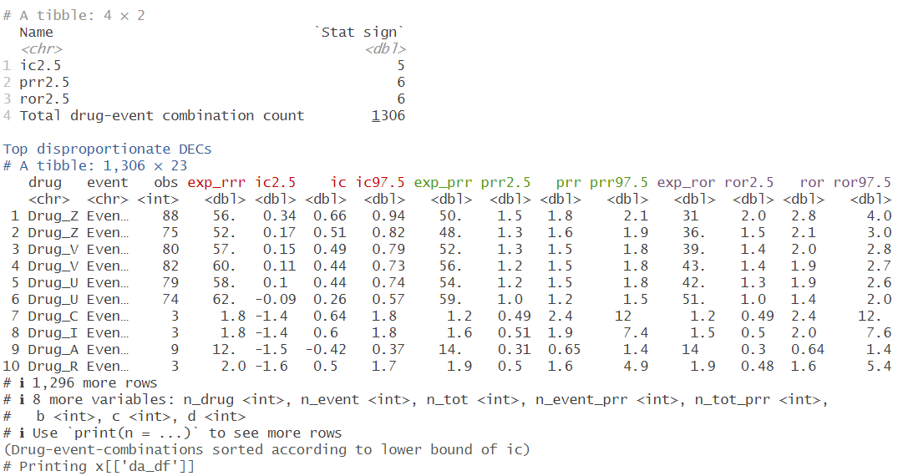
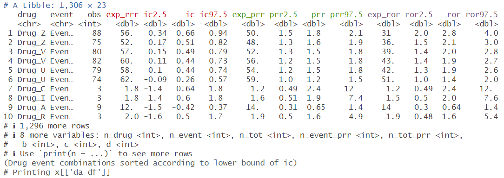

An R package for executing disproportionality analyses in pharmacovigilance, using the information component (IC), proportional reporting rate (PRR) and reporting odds ratio (ROR).
Installation
# Install stable version from CRAN
install.packages("pvda")Example code
To run a disproportionality analysis, pass the adverse event report-level data (here, drug_event_df) to function da as:

Screenshot of the summary print output.
To extract the results in a data frame, access “da_df” as a list object:
da_results <-
da1$da_df

Screenshot of the da_df data frame.